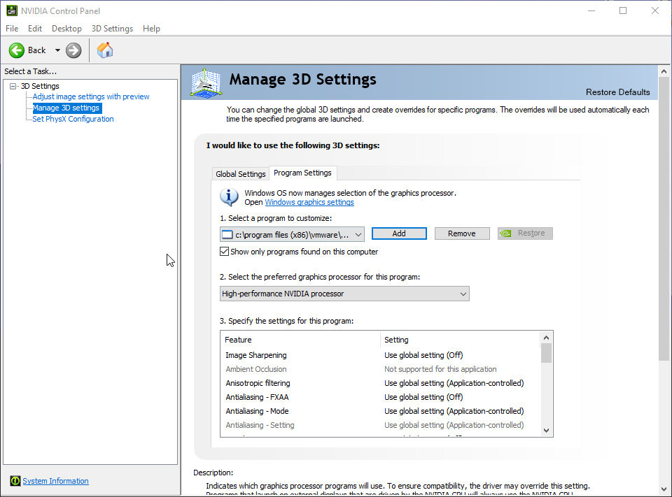
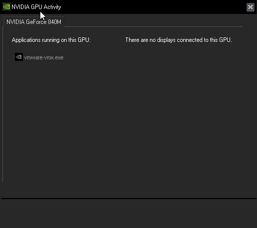
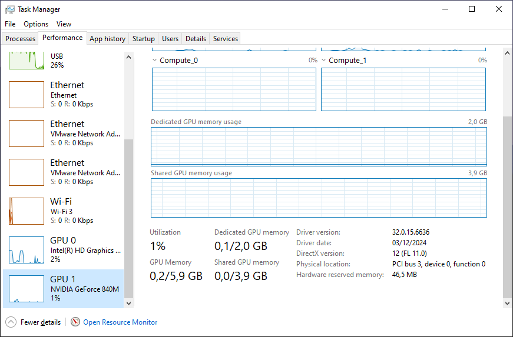

How to fix vmware running on integraded gpu instead of dedicaded gpu (nvidia gpu)
So, you're trying to run vmware smoothly but it doesn't run on your powerfull Nvidia gpu. Instead, it runs on your slower igpu which makes it less smooth. It also eats your ram because the ram is used as vram for the igpu. Let's fix that! Today I will show you how!
As you can see, we don't have an option to choose a gpu in the vmware's preferences.

But, we have another way to do this. Open your Nvidia control panel. You can open this using the context menu on your desktop, the tray icon or the start menu.

Then, go to "Manage 3D settings", then choose program settings.

Click add, then you click browse and you add the following executables:
Then, we select each executable and change the settings of it. Set the preferred graphics processor to High-perfomance NVIDIA processor.
That's it! When you launch a vm, you'll notice that it's running on the dedicaded Nvidia gpu instead of the integraded gpu. The vram usage isn't high on the screenshot but that changes when running tasks inside the vm.
 I hope this blogpost solved your issue! Thank you for reading!